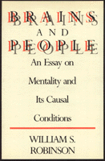

<body bgcolor="#FFFFFF" text="#000000" link="#0000FF" vlink="#CC0000" alink="#CC0000"><center><hr width="350" size="1" align="center" noshade>An original contribution to contemporary, analytic philosophy of mind<hr width="350" size="1" align="center" noshade><p><a href="https://cdcshoppingcart.uchicago.edu/Cart/ChicagoBook.aspx?ISBN=9780877225485&&PRESS=temple" target="_top">Buy this book!</a> | <a href="https://cdcshoppingcart.uchicago.edu/Cart/Cart.aspx?PRESS=temple" target="_top">View Cart</a> | <a href="https://cdcshoppingcart.uchicago.edu/Cart/Cart.aspx?PRESS=temple" target="_top">Check Out</a></p><p></p></center><!--none//--><h1>Brains and People</h1>
<H2>An Essay on Mentality and Its Causal Conditions</H2>
<h3>William S. Robinson</h3>
<P>cloth 0-87722-548-6 $37.95, May 88, <FONT COLOR=#990033>Out of Print</FONT>
<BR> 248 pp
</P><BLOCKQUOTE><I>"Robinson’s book is intelligent and well-motivated. Its topics are timely and of general interest. It offers worth-while and often original arguments for philosophers primarily, but anyone with cognitive science should want to read it, and anyone who takes an intelligent interest in matters of the mind would profit from it."</I>
<br>&#151<b>William G. Lycan</b>, University of North Carolina, Chapel Hill<I></I></BLOCKQUOTE>
<p>"The aim of this book is to present people to themselves in such a way as to make it intelligible to them who and what they are." In this original contribution to contemporary, analytic philosophy of mind, William S. Robinson refutes prevailing views that the human mind can be completely explained in terms of physical structures. And he constructs his own theory, which allows for a dualistic explanation of sensations and a physicalistic explanation of intentionality.
<p>Human beings have often been led to suspect that some part of themselves is not purely physical. There are four main non-theological reasons for this suspicion, based respectively on sensations, the ability to think, self-unity, and free will. Robinson presents a theory of mind which responds to these arguments and shows that current attempts to bring sensations, images, and feelings within the domain of the physical fail. He also shows, however, that these are the only exceptions to physicality needed in the theory of mind.
<p>In discussing thinking, Robinson gives a quasi-behaviorist account and shows how it avoids the well-known objection of Chisholm and Geach. He accounts for the several kinds of unity in our mental lives without recourse to substantial selves or acts of awareness. He presents a compatibilist view on the free will question and explains why it is that no attempt to give a purely factual criterion for responsibility can succeed.
<p><I>Brains and People</I> discusses much recent work in philosophy of mind and presents criticisms of some aspects of the widely-held functionalist view.
<BR>&nbsp;<h2>Reviews</h2>
<p><I>"Robinson's negative argumentation against traditional and recent attacks on epiphenomenalism is great fun. Robinson writes very clearly and puts his position down plainly; even those who are sure that he is wrong will benefit form sharpening their wit against him.... In the end, I think Robinson does show something which even the staunchest physicalist ought to admit but which should be of little comfort to the dualist: an epiphenomenalism of sensations is coherent and ultimately irrefutable."</I>
<br>&#151<b><I>Canadian Philosophical Review</I></b>
<BR>&nbsp;<H2>About the Author(s)</H2>
<P><b>William S. Robinson</b> is Professor of Philosophy at Iowa State University.</P>
<BR><H2>Subject Categories</H2>
<p><A HREF="/tempress/philosophy.html" TARGET="_top">Philosophy and Ethics</a>
</p>
<p align="center"><a href="https://cdcshoppingcart.uchicago.edu/Cart/ChicagoBook.aspx?ISBN=9780877225485&&PRESS=temple" target="_top">Buy this book!</a> | <a href="https://cdcshoppingcart.uchicago.edu/Cart/Cart.aspx?PRESS=temple" target="_top">View Cart</a> | <a href="https://cdcshoppingcart.uchicago.edu/Cart/Cart.aspx?PRESS=temple" target="_top">Check Out</a></p><p><font face="Arial" size="1"><a href="copyright.html" onMouseOver="window.status='Web Copyright Policy';return true;" onMouseOut="window.status=''" title="Web Copyright Policy">&copy;</a> 2015 <a href="http://www.temple.edu" target="new" onMouseOver="window.status='Link to Temple University home page';return true;" onMouseOut="window.status=''" title="Link to Temple University home page">Temple University</a>. All Rights Reserved. http://www.temple.edu/tempress/titles/566_reg.html</font></p>